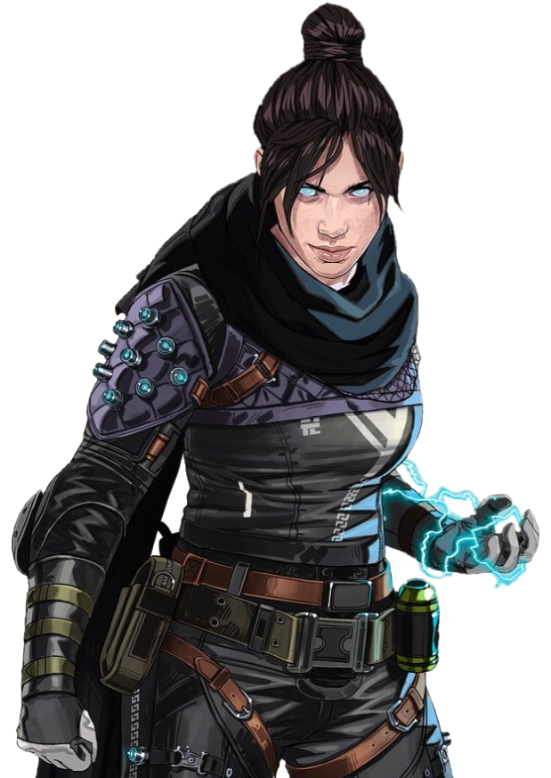

"삶과 죽음은 종이 한 장 차이지 그곳에서 날 만나게 될거야."
레이스
다차원 결투사
레이스는 신속하고 치명적인 공격으로 적들을 처형하고 차원의 균열을 열어서 시공간을 조작할 수 있는 난투가다. 하지만 어떻게 그런 능력을 갖게 되었는지는 알지 못합니다. 몇 년 전, 그녀는 IMC의 정신질환자 구금 시설에서 이전의 기억을 모두 잊어버린 채 깨어났습니다. 또한 그녀는 최후의 날에 관해 계속해서 속삭이는 목소리를 듣기 시작했습니다. 거의 미쳐버릴 뻔했지만 레이스는 그 목소리에 귀를 기울이며 신뢰하기 시작했고, 덕분에 공허의 힘을 다루는 법을 터득하여 시설에서 빠져나올 수 있었습니다.
자신의 진정한 자아를 찾기로 결심한 레이스는 실험에 관한 정보를 더 알아보기 위한 여정에 나섰습니다. 하지만 예전 실험 시설들은 Apex 게임에서 사용되는 아레나 아래에 묻혀 엄중한 보호를 받고 있었습니다. 이제 레이스는 Apex 게임에 참여해, 경기를 거듭할 때마다 진실에 다가가고 있습니다.
| 실명 | 리니 블레이지 |
|---|---|
| 나이 | 32세 |
| 홈 월드 | 타이폰 |
| 전술 능력 | 공허 속으로 |
| 패시브 능력 | 공허의 목소리 |
| 얼티밋 스킬 | 차원 균열 |